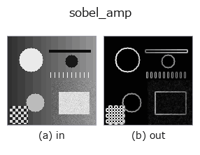

edges op• Datenarten: image → image
• Aufruf: fullseye.apply(img, "sobel_amp", a=0.5, b=0.5) (das 2-D-Modell ist ein Bild plus zwei skalare Regler a,b∈[0,1])
• HALCON-Äquivalent: sobel_amp (Bedeutung und Parameter sind in der HALCON-Referenz nachzulesen)

*Die Abbildung ist die tatsächliche Ausgabe auf einer synthetischen 128×128-Eingabe. Links Eingabe, rechts Ausgabe (ein Nicht-Bild-Rückgabewert wird als Wert gezeigt).*
Der Betrag des Sobel-Gradienten (normiertes `hypot(sobel_x, sobel_y)). Die grundlegendste Kantenerkennung, die die Größe des Gradientenvektors aus den vertikalen und horizontalen Kernen erster Ableitung berechnet. Entspricht HALCONs sobel_amp` (Detect edges (amplitude) using the Sobel operator.).
> Die ausführliche Beschreibung unten ist der Originaltext — Zusammenfassung und Überschriften sind übersetzt.
`a, b` は未使用 ―― 固定カーネル 1 種類のみで、シグマや閾値のような
調整点は無い(ぼかしてから使いたい場合は前段に `gauss_filter` 等を挟む)。
• Leitfaden zur Familie gallery2d_edges
• Katalog der Beispieldaten (Download-URLs / Lizenzen) — 2-D nutzt skimage.data (BSD/Public Domain) plus synthetische Bilder, 3-D nennt Download-URLs echter Datenquellen (Stanford, PDS, …).
• Herkunft und Literatur der Operatoren — die Quellen der Forschung/Verfahren, auf denen diese Operatorfamilie beruht.
• Der kanonische Algorithmus (Autor, Jahr) und seine Anwendungen stehen im Familienleitfaden oben.
Das Programm unten ist nachweislich lauffähig (gleiche Eingabe wie die Abbildung). In der Studio-Hilfe wird dieser Block zu Schaltflächen, die es sofort laden und ausführen.
sobel_amp 0.40 0.50
▸ Load this pipeline · Load & run
• gallery2d_edges — py -3.11 examples/gallery2d_edges.py
• poc_fiber_orientation — py -3.11 examples/poc_fiber_orientation.py
• poc_focus_stacking — py -3.11 examples/poc_focus_stacking.py
• poc_white_balance — py -3.11 examples/poc_white_balance.py
image als Eingabe)identity · gaussian · mean_box · bilateral · unsharp · median · min_filter · max_filter
edges)sobel_mag · prewitt_mag · roberts_mag · dog · grad_dir · log · corner_response · sk_scharr
*Provenance: ops.py — 2D Operator-Registry. Diese Notiz wird von tools/opdocs.py md erzeugt (nicht von Hand bearbeiten).*
© 2026 Kazufumi Furuse — Fullseye operator documentation. Licensed under Apache-2.0.